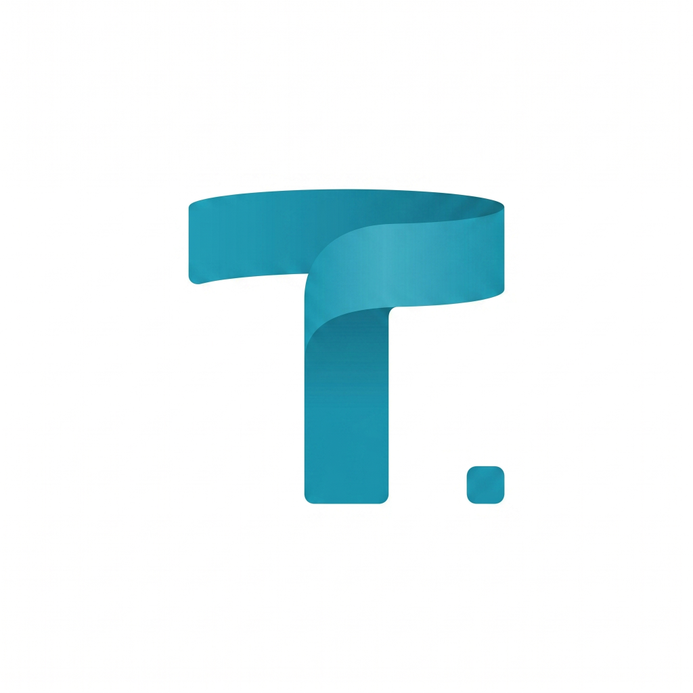

Raphaël Eliard.
Ingénieur Génie Civil Nucléaire | Développement d'outils web
Bienvenue sur mon espace personnel. Ce site sert de répertoire central pour documenter mes travaux et héberger mes applications. Vous trouverez ci-dessous une sélection de mes projets informatiques, développés pour répondre à des problématiques d'ingénierie, personnelle ou expérimenter des technologies.
Gestion de budget
Application web dédiée à la gestion fine des finances personnelles. Fusionne les approches locale (sécurisée) et cloud (Supabase) au sein d'une interface unique et harmonisée.
Gestion Patrimoine
Application web unifiée de suivi macroéconomique et financier à long terme. Intègre la valorisation d'actifs, la structure de dettes, une courbe de plus-value et le cache des cours.
Calcul Béton Armé
Application automatisée de dimensionnement d'ouvrages en béton armé selon l'Eurocode 2, intégrant la génération dynamique de plans de ferraillage et une visite guidée.
Suivi de Projets
Tableau de bord SPA premium (v2.0) pour le suivi budgétaire et des heures en ingénierie. Propose un mode démo interactif, des graphiques EVM et un design immersif.

Outil en dév
Application Web Progressive (PWA) modulaire intégrant un moteur de synchronisation asynchrone hors-ligne, des fonctions Edge asynchrones (Supabase) et un système autonome de notifications push.